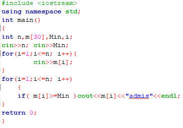
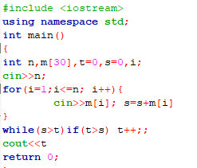
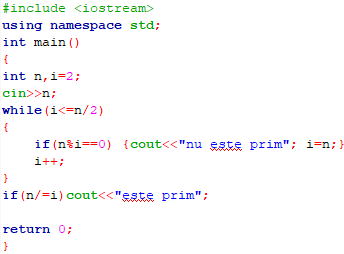

| Pagina principala | Metoda backtracking | Metoda triarii | Metoda greedy |
|---|
Se numeşte metoda metoda triarii ce indentifică toate soluţiile unei probleme în dependenţă de mulţimea soluţiilor posibile. Toate soluţiile se identifică prin valori, ce aparţin tipurilor de date studiate: integer, boolean, enumerare, char, subdomeniu, tablouri unidimensionale. Fie P o problemă, soluţia căreia se află printre elementele mulţimii S cu un număr finit de elemente. S={s1, s2 , s3 , ... , sn} . Soluţia se determină prin analiza fiecărui element si din mulţimea S.
Este dat o lista cu n elevi, fiecare avand media M, apoi se citeste media de intrare min. Afisati la ecran mediile trecatoare.
Se citeste de la ecran pretul produselor cumparate si numarul de produse cumparate. Sa se determine cit va fi totalul.
De la ecran se citeste un numar. De determinat daca este prim.
